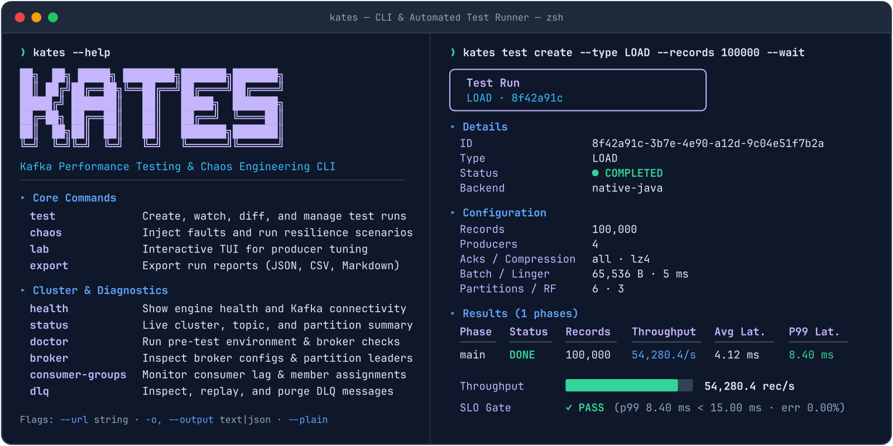
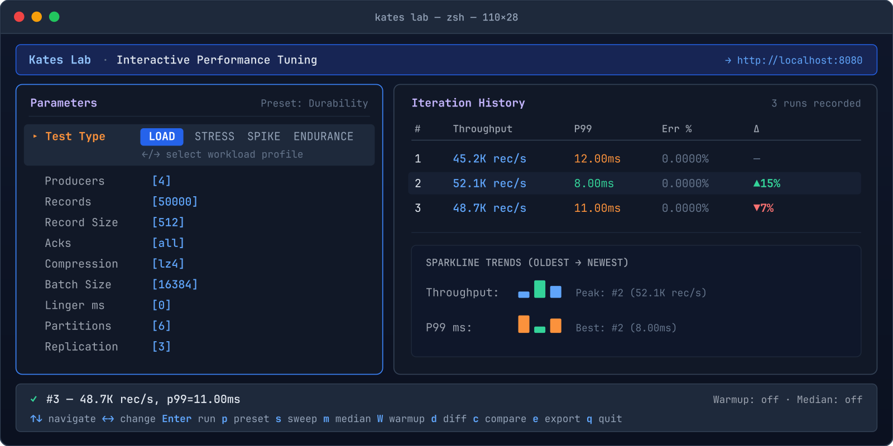

Kates is the Kubernetes-native engineering platform that unifies open-loop tail-latency benchmarking, automated multi-zone chaos injection, bit-level zero-loss sequence auditing, and cross-era MirrorMaker 2 migrations.
Tune `linger.ms`, `batch.size`, compression, and `acks` live from the terminal while watching throughput and P99 histograms update every second.


Every layer is packaged as Cosign-signed OCI Helm charts with strict JSON schemas, 38-rule cluster conformity checks, and Prometheus/Grafana metric contracts.
LOAD, STRESS, SPIKE, ENDURANCE, VOLUME, CAPACITY, ROUND_TRIP, SHARE_GROUP (KIP-932), TRANSACTIONS, SCHEMA_PERF, and INTEGRATION_CDC.
Inject broker pod kills, KRaft quorum leader kills, network partitions, I/O stress, and DNS faults while continuous availability probes score recovery.
Per-message SHA-256 payload checksums, monotonic sequence gap detection, duplicate tracking, and per-partition ordering guarantees.
Zone-pinned KafkaNodePools, least-privilege NetworkPolicies, Kyverno PSS Restricted enforcement, Cruise Control, and SeaweedFS tiered storage.
Migrate live Kafka 2.x and 3.x clusters to Kafka 4.x KRaft with automated offset translation, cutover gates, and `kates migrate` verification.
Grade any Kubernetes + Kafka cluster with `kates cluster conformity` and `kates security audit` before a single production topic lands.
Kates is free and Apache 2.0. When you need answers fast, the people who built it run it on your cluster and hand you a signed-off report your leadership can act on.
Fixed scope, about two weeks. We run the 38-rule conformity audit, a baseline load test, and a broker and controller GameDay against your cluster.
Move Kafka 2.x / 3.x off ZooKeeper to 4.x KRaft with MirrorMaker 2, verified offset translation, and zero-loss proof before cutover.
Keep it proven. We wire Kates SLA gates into your pipelines and stay on call for your platform team.
Not sure where to start? Send us your cluster size and Kafka version. We reply with a free 30-minute assessment call.
Get a free assessment →Most Kafka benchmarks measure the test harness’s own queueing delay rather than the cluster. Kates combines an open-loop workload generator, a 3-zone KRaft reference architecture, and a 40-chapter practitioner’s book to turn reliability into a falsifiable science.
Quarkus control plane, Go CLI/TUI, PostgreSQL state store, and the 3-zone KRaft `krafter` cluster topology.
Little’s Law, Universal Scalability Law, Coordinated Omission correction, YAML SLA gates, and interactive TUI tuning.
Raft quorum fault tolerance, unclean leader election prevention, and cryptographic SHA-256 sequence auditing.
USE/RED methodology, 8 curated Grafana dashboards, JMX exporter contracts, and W3C trace propagation.
Strimzi operator lifecycle, NetworkPolicy unions, multi-tenancy, Debezium EOS pipelines, and MirrorMaker 2 cutovers.
Complete command flags, OpenAPI endpoints, Protobuf RPC contracts, troubleshooting decision trees, and version pins.
kates binary.
Detect Kubernetes topology, deploy zone-aware Strimzi KRaft clusters, run SLA-gated load tests, inject LitmusChaos disruptions, audit security posture, and tune producer batching in an interactive Bubble Tea TUI.
From `helm install` to automated CI/CD SLA gates and multi-zone chaos GameDays—designed for Kubernetes platform teams running Apache Kafka 4.x.
Closed-loop benchmarks hide broker stalls by slowing down the sender. Kates records intended send schedules in 64-bit HdrHistograms and fails CI pipelines the moment P99, error rate, or message loss crosses your YAML threshold.
Read online or download the typeset LuaLaTeX PDF covering queueing theory, KRaft consensus, NetworkPolicy unions, Debezium EOS, and MirrorMaker 2 migrations.
`strimzi-operator`, `kafka-cluster`, `connect-cluster`, `mirror-maker2`, `kates`, `kates-chaos`, and `monitoring`—validated against Strimzi CRDs, Kyverno PSS Restricted, and Prometheus metric contracts.
Pre-built Connect 4.3.1 image bundling Debezium PostgreSQL/MySQL/MongoDB/SQL Server, Apicurio Registry v3 converters, and Aiven S3/JDBC connectors with render-time config rails.
Verify zone spread, StorageClass binding mode, KRaft quorum sizing, `min.insync.replicas`, SCRAM/mTLS listeners, and NetworkPolicy peer isolation in seconds.
Target Cluster: krafter (3 Controllers · 3 Zone-Pinned Brokers · RF=3 · min.isr=2)
Select a LitmusChaos disruption below to see how `kates resilience` coordinates fault injection, continuous availability probes, and zero-loss sequence verification.